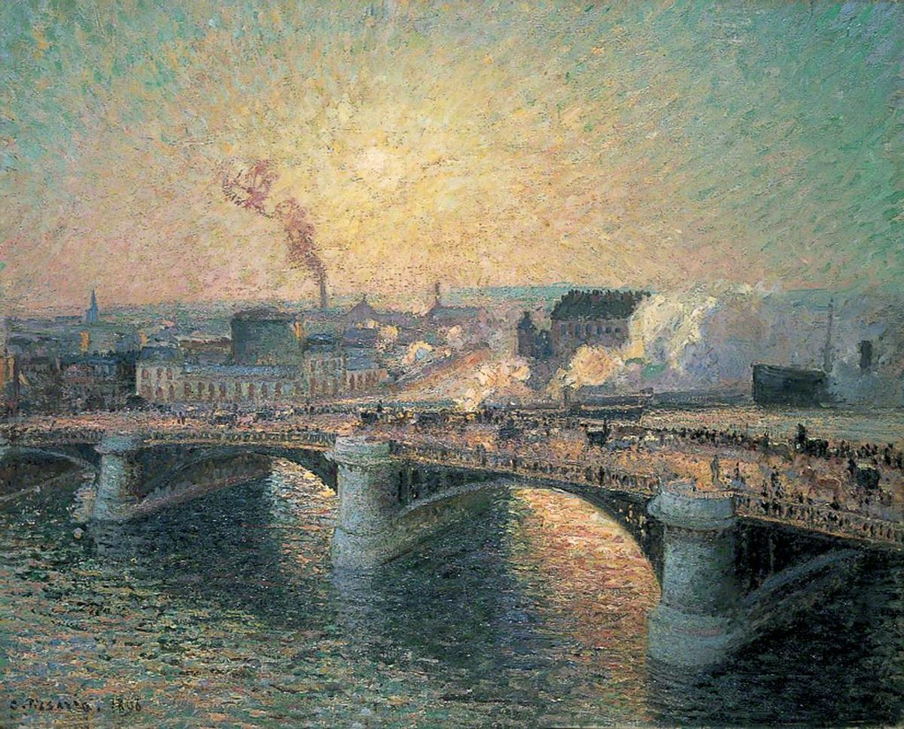

<head>
<meta charset="UTF-8" />
<meta name="keywords" content="drawing, painting" />
<meta name="description" content="drawings by Sunjy" />
<title>Sunjy</title>
<link rel="shortcut icon" type="image/x-icon" href="../../mImages/mCommon/favicon.ico" media="screen" />
<link rel="stylesheet" type="text/css" href="../../mCsses/mCommon/mCssA.css" />
<link rel="stylesheet" type="text/css" href="../../mCsses/mCommon/mCssB.css" />
<link rel="stylesheet" type="text/css" href="../../mCsses/mCommon/mCssC.css" />
<link rel="stylesheet" type="text/css" href="../../mCsses/mCommon/mCssD.css" />
<link rel="stylesheet" type="text/css" href="../../mCsses/mContent/mCssA.css" />
<link rel="stylesheet" type="text/css" href="../../mCsses/mContent/mCssB.css" />
<link rel="stylesheet" type="text/css" href="../../mCsses/mContent/mCssC.css" />
<link rel="stylesheet" type="text/css" href="../../mCsses/mContent/mCssD.css" />
</head>
<script type="text/javascript" src="../../mScripts/mContent/mContentAA.js" /></script>
<script type="text/javascript" src="../../mScripts/mContent/mContentAB.js" /></script>
<script type="text/javascript" src="../../mScripts/mContent/mContentAC.js" /></script>
<script type="text/javascript" src="../../mScripts/mContent/mContentAD.js" /></script>
<script type="text/javascript"></script> 
<script type="text/javascript">
document.write('<div class="mImgAbsolute"></div>');
/*
document.write('<p class="mFontSizeBColor" />From a white paper...</p>');
document.write('<table class="center"><tr><td>');
document.write('');
document.write('</td></tr></table>');
*/
</script>


<script type="text/javascript">
document.write('<p class="mFontSizeBColor" />The Pont Boieldieu at Sunset</p>');
document.write('<p class="mFontSizeSColor" />“The Pont Boieldieu at Sunset” by Camille Pissarro depicts the Pont Boieldieu, an iron bridge completed in 1885.  This painting shows Pissarro’s interest in moving beyond just traditional landscape paintings of verdant rural scenes.<br><br>It is one of a series of paintings created at a time when Pissarro was seeking to paint the industrial modernity of the area.<br><br>Pissarro had made an earlier trip in 1883 to Rouen and had created a series of images of the city.<br><br>However, on his 1896 visits, he stayed at different hotels, each with a balcony from which he could paint the bridge from a different angle.<br><br>His room overlooked the Seine, and it is from this vantage point that he painted.<br><br>By working from the window of his hotel room, Pissarro found an imaginative way of capturing the hustle and bustle of the city. Working from his room also avoided the challenges of installing oneself in the street.<br><br>In this painting, the sunset and the tilt of the bridge allowed Pissarro to make the most of capturing the busy pedestrian and carriage traffic.<br></p>');
document.write('<table class="center" /><tr><td>');
document.write('<br>It is one of a series of paintings created at a time when Pissarro was seeking to paint the industrial modernity of the area.<br><br>Pissarro had made an earlier trip in 1883 to Rouen and had created a series of images of the city.<br><br>However, on his 1896 visits, he stayed at different hotels, each with a balcony from which he could paint the bridge from a different angle.<br><br>His room overlooked the Seine, and it is from this vantage point that he painted.<br><br>By working from the window of his hotel room, Pissarro found an imaginative way of capturing the hustle and bustle of the city. Working from his room also avoided the challenges of installing oneself in the street.<br><br>In this painting, the sunset and the tilt of the bridge allowed Pissarro to make the most of capturing the busy pedestrian and carriage traffic.<br>" />');
document.write('</td></tr></table>');
</script>


